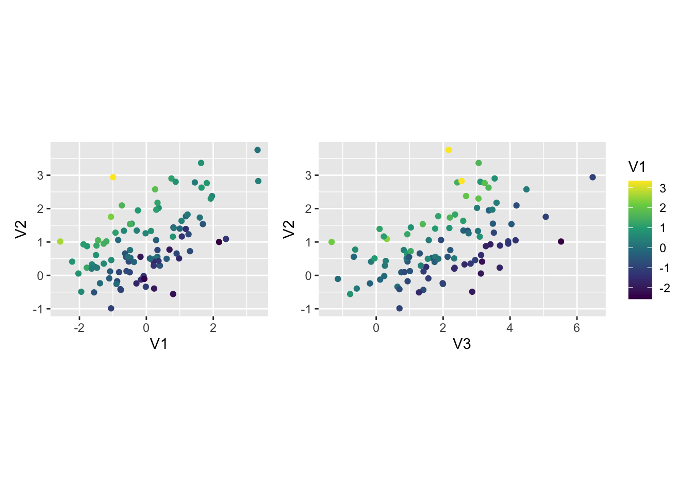
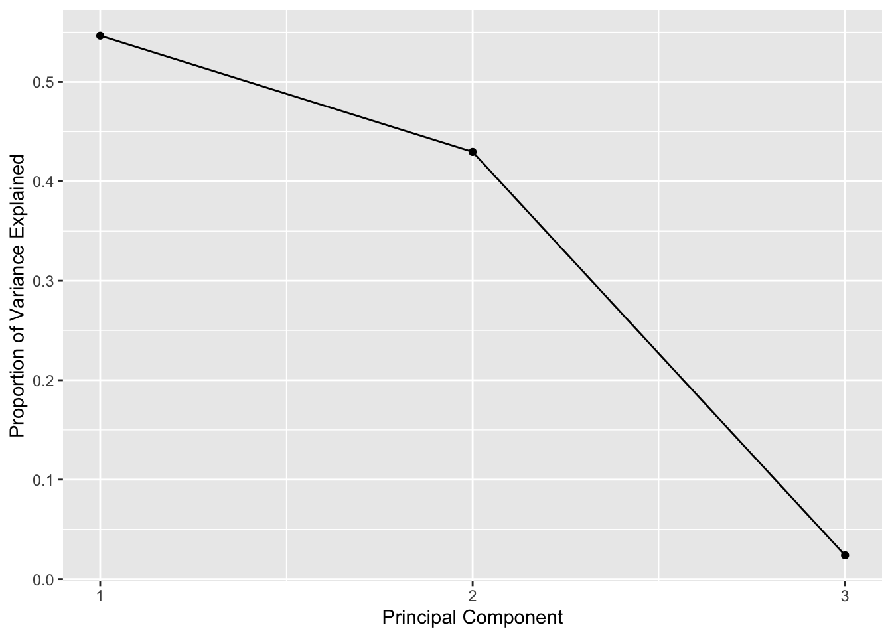
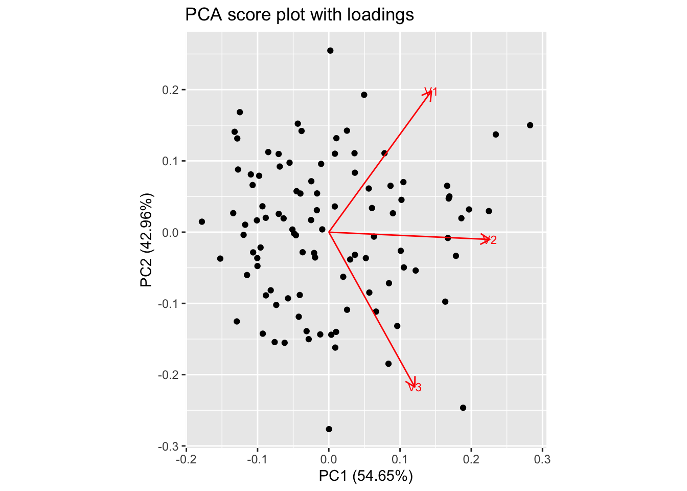
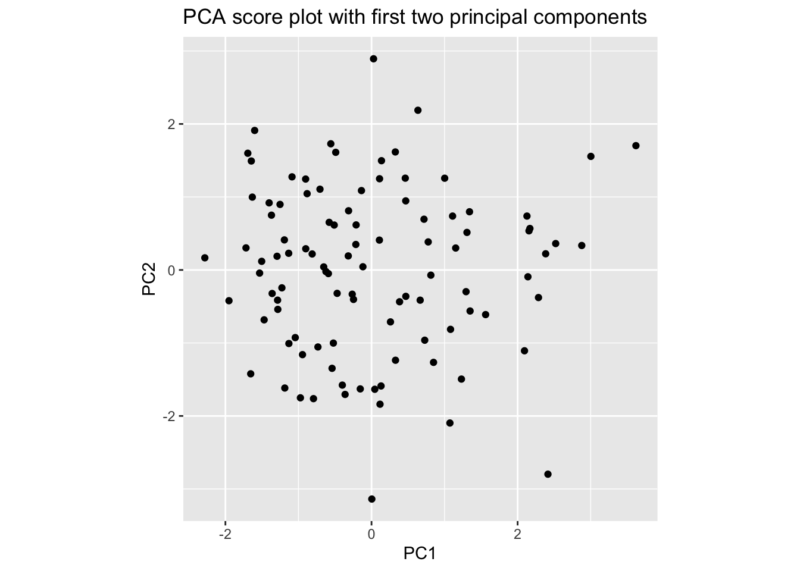
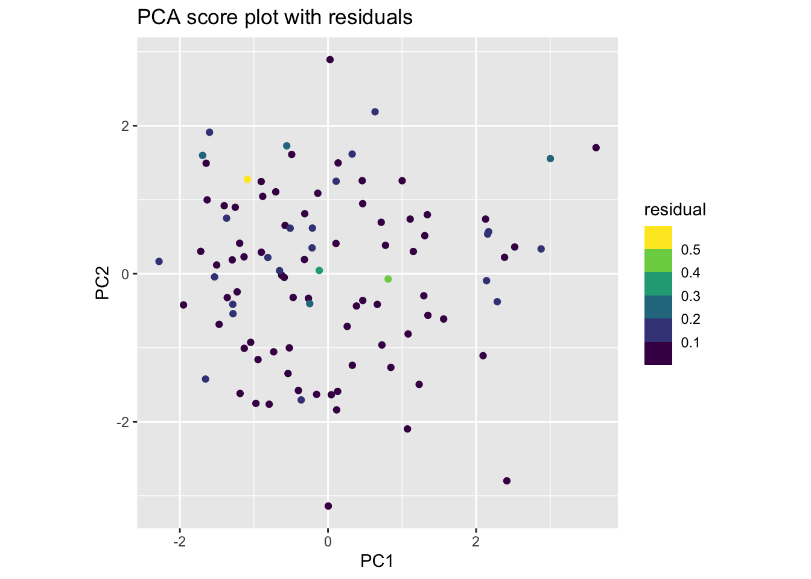
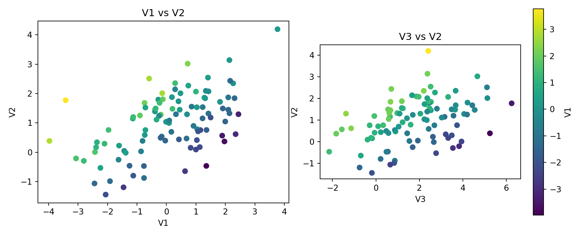
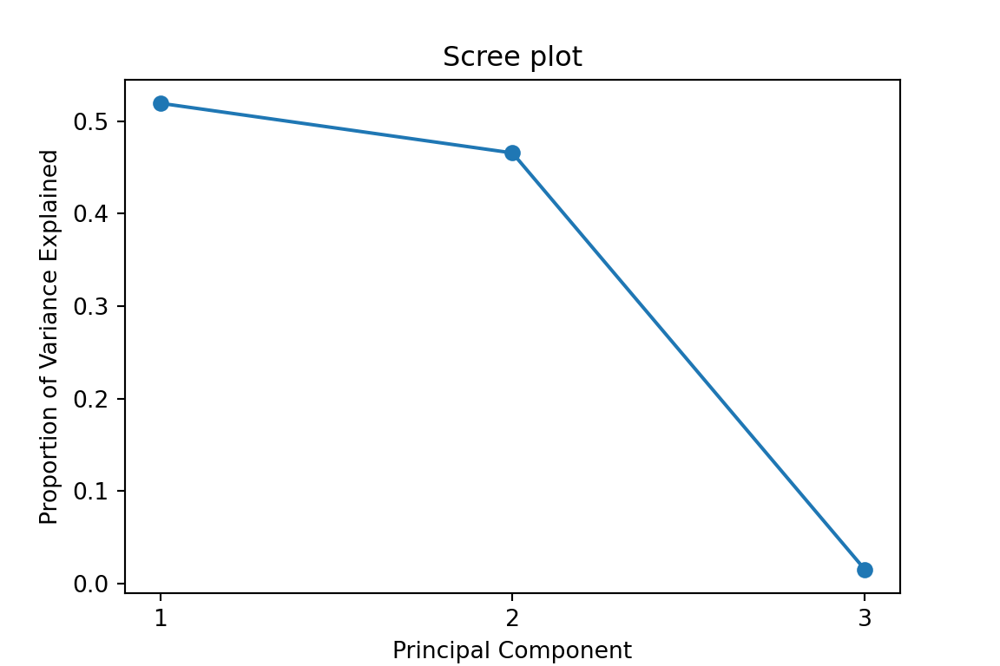
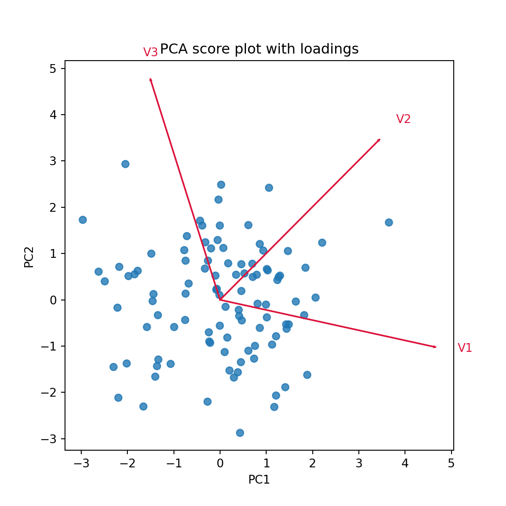
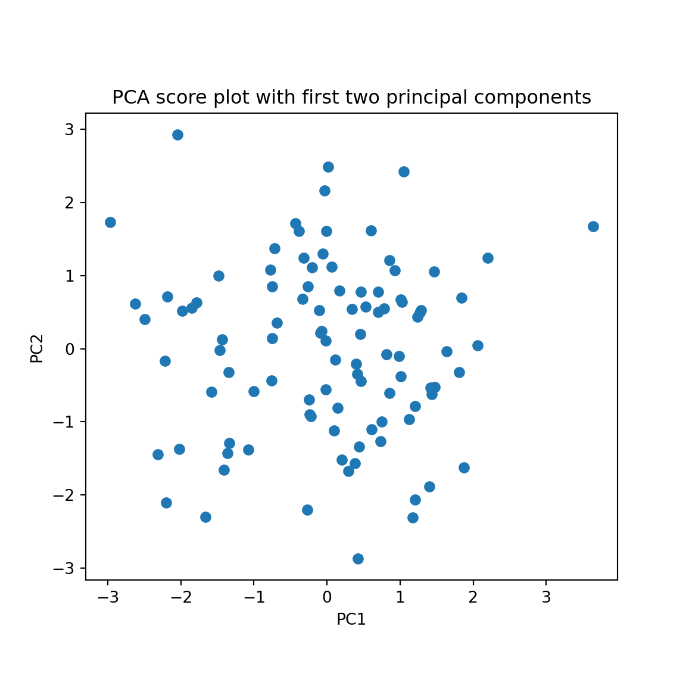
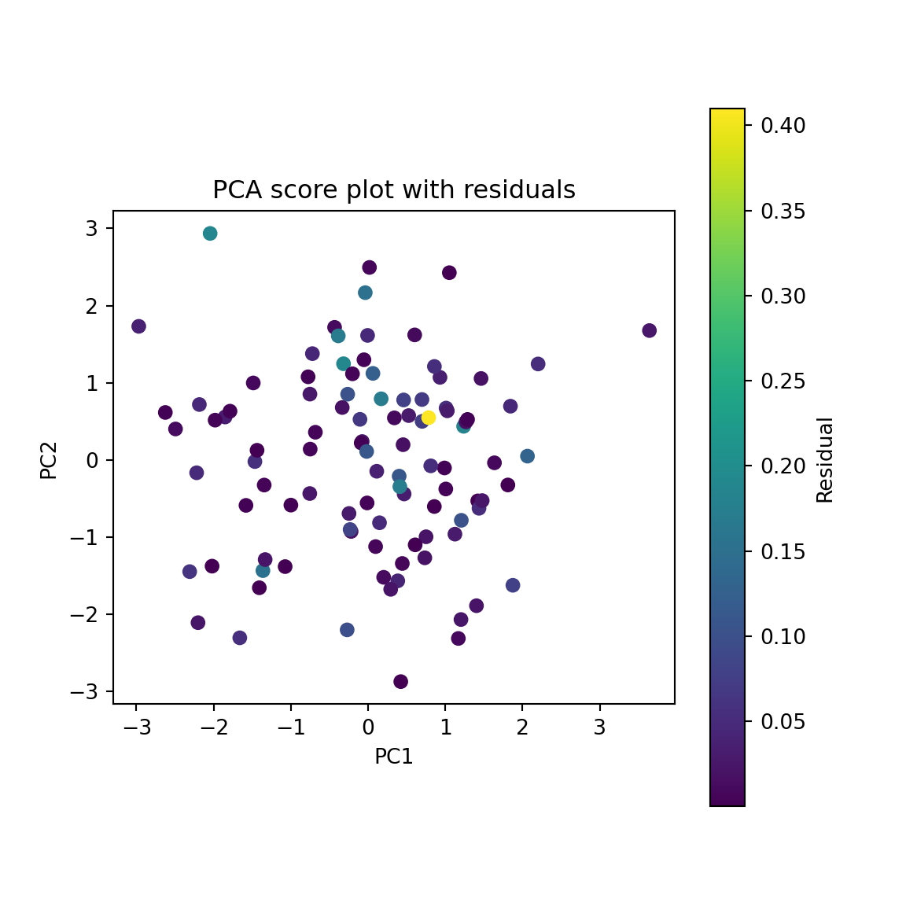

library(mongolite)
library(MASS)
library(tidyverse)
library(patchwork)
library(ggfortify)Multi-agent system for smart machining, part II
Chapter I-d: exercises
1 Exercise 1: PCA
1.1 Example in R
We can create a bivariate normal sample with a strong correlation between the two variables, and then apply PCA to it. The following code generates 100 samples from a bivariate normal distribution with mean zero and covariance matrix that has 2 and 1 on the diagonal and 0.8 on the off-diagonal, which means that the two variables are strongly correlated:
set.seed(0)
cm <- matrix(c(
2, 0.8, -0.9,
0.8, 1, 0.7,
-0.9, 0.7, 2.5
), nrow = 3, byrow = TRUE)
df <- mvrnorm(n = 100, mu = c(0, 1, 2), Sigma = cm) %>%
as_tibble() %>%
mutate(i = row_number(), .before = 1)
df %>% slice_head(n=5) %>% knitr::kable()| i | V1 | V2 | V3 |
|---|---|---|---|
| 1 | -0.7317726 | 2.0944142 | 4.1921394 |
| 2 | -0.5268653 | 0.4159005 | 0.9356861 |
| 3 | -1.7793466 | 0.2307005 | 3.6913330 |
| 4 | -1.1935736 | 1.0189383 | 3.9417735 |
| 5 | -1.3851729 | -0.2355991 | 1.9863782 |
On a plot:
p1 <- df %>%
ggplot(aes(x = V1, y = V2, color = V3)) +
geom_point() +
scale_color_viridis_c() +
coord_equal() +
theme(legend.position = "none")
p2 <- df %>%
ggplot(aes(x = V3, y = V2, color = V1)) +
geom_point() +
scale_color_viridis_c() +
coord_equal()
p1 + p2
The actual, sample covariance matrix is:
cov(df %>% select(-i)) %>% knitr::kable()| V1 | V2 | V3 | |
|---|---|---|---|
| V1 | 1.4679204 | 0.6672781 | -0.5239148 |
| V2 | 0.6672781 | 0.9586985 | 0.7688910 |
| V3 | -0.5239148 | 0.7688910 | 2.2271363 |
Now we can apply PCA to this data. We can use the prcomp function, which performs PCA by computing the singular value decomposition of the centered and scaled data. The first principal component will capture the direction of maximum variance in the data, which should be along the line of correlation between the two variables.
pca <- prcomp(df %>% select(-i), center = TRUE, scale. = TRUE)
summary(pca)Importance of components:
PC1 PC2 PC3
Standard deviation 1.2805 1.1353 0.26752
Proportion of Variance 0.5465 0.4296 0.02386
Cumulative Proportion 0.5465 0.9761 1.00000We can create the scree plot to visualize the proportion of variance explained by each principal component, in decreasing order:
tibble(
a = 1:3,
eta = summary(pca)$importance[2,]
) %>%
ggplot(aes(x = a, y = eta)) +
geom_line() +
geom_point() +
scale_x_continuous(breaks = 1:3) +
labs(x = "Principal Component", y = "Proportion of Variance Explained")
autoplot(
pca, data = df,
loadings = TRUE,
loadings.label = TRUE,
loadings.label.size = 3
) +
labs(title = "PCA score plot with loadings") +
coord_equal()
So, in our example the first two principal components collect more than 97% of the total variance. We can thus reduce the dimensionality of the data from 3 to 2 by projecting the data onto the first two principal components. This is done by multiplying the centered and scaled data by the matrix of the first two eigenvectors (the loadings).
The scores matrix \(\mathbf{T} = \mathbf{X}_c \mathbf{P}\) is:
df_T <- df %>%
select(-i) %>%
scale(center = TRUE, scale = TRUE) %>%
tcrossprod(pca$rotation)If we only take the first \(a = 2\) principal components, we can create a new data frame with the scores of the first two principal components, \(\mathbf{T_a} = \mathbf{X}_c \mathbf{P}_a\):
Xc <- df %>%
select(-i) %>%
scale(center = TRUE, scale = TRUE)
Ta <- (Xc %*%pca$rotation[,1:2]) %>%
as_tibble()
Ta %>% ggplot(aes(x = PC1, y = PC2)) +
geom_point() +
coord_equal() +
labs(title = "PCA score plot with first two principal components")
Or, equivalently, by directly tapping into the x component of the pca object, which contains the scores of all the principal components:
pca$x[,1:2] %>%
as_tibble() %>%
ggplot(aes(x = PC1, y = PC2)) +
geom_point() +
coord_equal() +
labs(title = "PCA score plot with first two principal components")
Now we can calculate the residuals of the PCA reconstruction, which are the differences between the original data and the data reconstructed from the first two principal components. The reconstructed data can be obtained by multiplying the scores of the first two principal components by the transpose of the loadings of the first two principal components, and then adding back the mean of the original data.
df_hat <- tcrossprod(pca$x[, 1:2, drop = FALSE], pca$rotation[, 1:2, drop = FALSE])
epsi <- Xc - df_hat
pca$x[,1:2] %>%
as_tibble() %>%
mutate(residual = rowSums(epsi^2)) %>%
ggplot(aes(x = PC1, y = PC2, color = residual)) +
geom_point() +
scale_color_viridis_b() +
labs(title = "PCA score plot with residuals") +
coord_equal()
1.2 Example in Python
The same workflow can be reproduced in Python with numpy, pandas, scikit-learn, and matplotlib.
import numpy as np
import pandas as pd
rng = np.random.default_rng(0)
cm = np.array([
[2.0, 0.8, -0.9],
[0.8, 1.0, 0.7],
[-0.9, 0.7, 2.5],
])
mu = np.array([0.0, 1.0, 2.0])
X = rng.multivariate_normal(mean=mu, cov=cm, size=100)
df_py = pd.DataFrame(X, columns=["V1", "V2", "V3"])
df_py.insert(0, "i", np.arange(1, len(df_py) + 1))
df_py.head() i V1 V2 V3
0 1 0.088701 0.997474 2.340826
1 2 0.450432 1.449486 2.529597
2 3 -2.357559 0.342007 3.212092
3 4 1.913295 1.492568 0.562541
4 5 2.444284 1.296232 -1.377366We can visualize the same pairwise relationships as in the R example:
import matplotlib.pyplot as plt
fig, axes = plt.subplots(1, 2, figsize=(10, 4))
sc1 = axes[0].scatter(df_py["V1"], df_py["V2"], c=df_py["V3"], cmap="viridis")
axes[0].set_xlabel("V1")
axes[0].set_ylabel("V2")
axes[0].set_title("V1 vs V2")
axes[0].set_aspect("equal", adjustable="box")
sc2 = axes[1].scatter(df_py["V3"], df_py["V2"], c=df_py["V1"], cmap="viridis")
axes[1].set_xlabel("V3")
axes[1].set_ylabel("V2")
axes[1].set_title("V3 vs V2")
axes[1].set_aspect("equal", adjustable="box")
fig.colorbar(sc2, ax=axes[1], label="V1")<matplotlib.colorbar.Colorbar object at 0x169582000>plt.tight_layout()
plt.show()
The sample covariance matrix is:
df_py.drop(columns="i").cov() V1 V2 V3
V1 2.258943 0.832087 -1.218430
V2 0.832087 1.037353 0.695967
V3 -1.218430 0.695967 2.856069Now we standardize the variables and apply PCA:
from sklearn.decomposition import PCA
from sklearn.preprocessing import StandardScaler
X_raw = df_py.drop(columns="i").to_numpy()
scaler = StandardScaler()
Xc = scaler.fit_transform(X_raw)
pca = PCA()
scores = pca.fit_transform(Xc)
summary_py = pd.DataFrame({
"standard_deviation": np.sqrt(pca.explained_variance_),
"proportion_of_variance": pca.explained_variance_ratio_,
"cumulative_proportion": np.cumsum(pca.explained_variance_ratio_),
}, index=[f"PC{i}" for i in range(1, 4)])
summary_py standard_deviation proportion_of_variance cumulative_proportion
PC1 1.254315 0.519191 0.519191
PC2 1.187651 0.465470 0.984661
PC3 0.215596 0.015339 1.000000The scree plot shows the variance explained by each principal component:
fig, ax = plt.subplots(figsize=(6, 4))
ax.plot([1, 2, 3], pca.explained_variance_ratio_, marker="o")
ax.set_xticks([1, 2, 3])
ax.set_xlabel("Principal Component")
ax.set_ylabel("Proportion of Variance Explained")
ax.set_title("Scree plot")
plt.show()
We can also reproduce a PCA score plot with the loadings:
loadings = pca.components_.T
scores_df = pd.DataFrame(scores, columns=["PC1", "PC2", "PC3"])
fig, ax = plt.subplots(figsize=(6, 6))
ax.scatter(scores_df["PC1"], scores_df["PC2"], alpha=0.8)
arrow_scale = 6
for idx, feature in enumerate(["V1", "V2", "V3"]):
ax.arrow(
0, 0,
loadings[idx, 0] * arrow_scale,
loadings[idx, 1] * arrow_scale,
color="crimson",
width=0.01,
length_includes_head=True
)
ax.text(
loadings[idx, 0] * arrow_scale * 1.1,
loadings[idx, 1] * arrow_scale * 1.1,
feature,
color="crimson"
)
ax.set_xlabel("PC1")
ax.set_ylabel("PC2")
ax.set_title("PCA score plot with loadings")
ax.set_aspect("equal", adjustable="box")
plt.show()
As in the R example, the first two principal components explain almost all of the variance, so we can project the data onto the first two columns of the loading matrix:
Ta = Xc @ loadings[:, :2]
Ta_df = pd.DataFrame(Ta, columns=["PC1", "PC2"])
Ta_df.head() PC1 PC2
0 -0.076512 0.239106
1 0.340248 0.545562
2 -1.851793 0.557004
3 1.420002 -0.529468
4 1.874924 -1.622015fig, ax = plt.subplots(figsize=(6, 6))
ax.scatter(Ta_df["PC1"], Ta_df["PC2"])
ax.set_xlabel("PC1")
ax.set_ylabel("PC2")
ax.set_title("PCA score plot with first two principal components")
ax.set_aspect("equal", adjustable="box")
plt.show()
This is equivalent to taking the first two columns of the score matrix returned by fit_transform:
scores_df[["PC1", "PC2"]].head() PC1 PC2
0 -0.076512 0.239106
1 0.340248 0.545562
2 -1.851793 0.557004
3 1.420002 -0.529468
4 1.874924 -1.622015Finally, we reconstruct the standardized data using only the first two principal components and compute the residuals:
X_hat = scores[:, :2] @ loadings[:, :2].T
epsi = Xc - X_hat
residual = np.sum(epsi ** 2, axis=1)
scores_residual_df = scores_df[["PC1", "PC2"]].copy()
scores_residual_df["residual"] = residual
scores_residual_df.head() PC1 PC2 residual
0 -0.076512 0.239106 0.022793
1 0.340248 0.545562 0.010288
2 -1.851793 0.557004 0.032653
3 1.420002 -0.529468 0.000707
4 1.874924 -1.622015 0.078346fig, ax = plt.subplots(figsize=(6, 6))
sc = ax.scatter(
scores_residual_df["PC1"],
scores_residual_df["PC2"],
c=scores_residual_df["residual"],
cmap="viridis"
)
ax.set_xlabel("PC1")
ax.set_ylabel("PC2")
ax.set_title("PCA score plot with residuals")
ax.set_aspect("equal", adjustable="box")
fig.colorbar(sc, ax=ax, label="Residual")<matplotlib.colorbar.Colorbar object at 0x177366b10>plt.show()